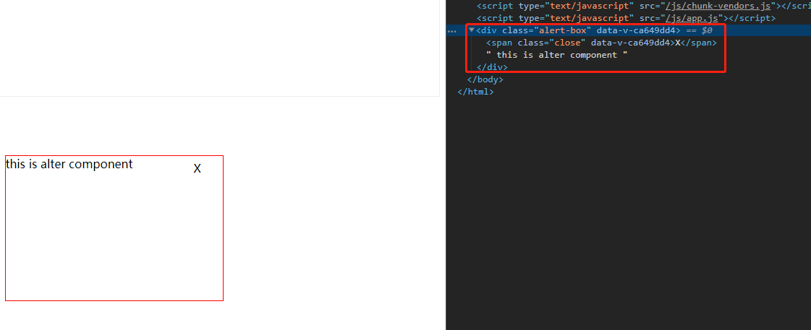

020-组件teleport
称为“传送门”组件，类似于React的<Portal />
1、场景
在vue2中，我们定义一个弹窗组件Alter.vue
<div class="alert-box" v-if="isShow">
<span class="close" @click="$emit('update:isShow', !isShow)">X</span>
this is alter component
</div>
然后在父组件引用，子组件的html结构是在父组件里面，但是我们往往想要放在body上
<teleport to="body">
<div class="alert-box" v-if="isShow">
<span class="close" @click="$emit('update:isShow', !isShow)">X</span>
this is alter component
</div>
</teleport>
vue会通过document.querySelect()查到上面的to指定的DOM

2、属性
<teleport />上有个属性disabled，设置为true表示禁止传送门功能，那就和普通组件一样的展示方式
<teleport to="body" :disabled="true">
...
</teleport>
3、同时多个teleport
当同时有多个<teleport />的时候，会依次全部添加进入
<teleport to="#box">AAA</teleport>
<teleport to="#box">BBB</teleport>
结果
<div id="box">
AAA
BBB
</div>
4、特点
- 因为真实DOM接口已经脱离了父组件，所以在父组件无法捕获到
<teleport />里面的事件冒泡